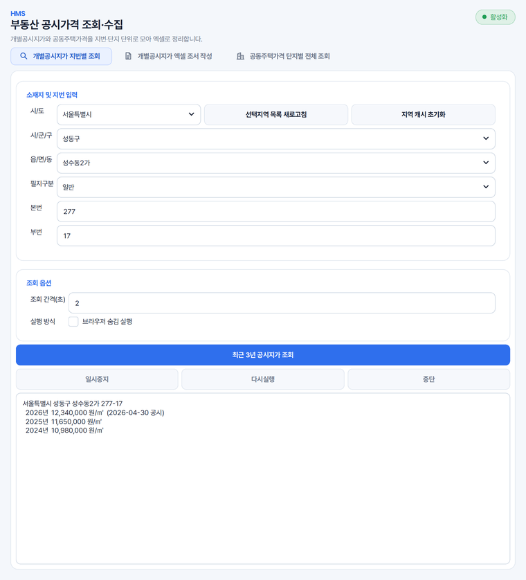
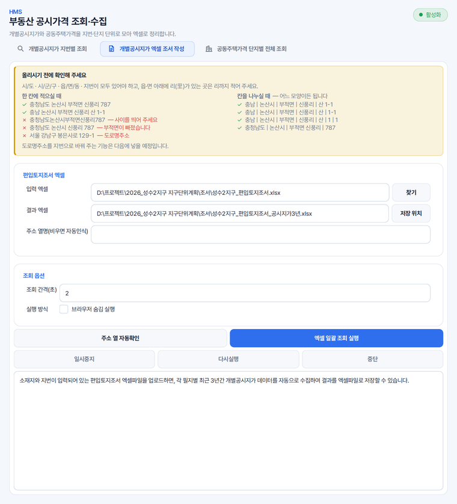
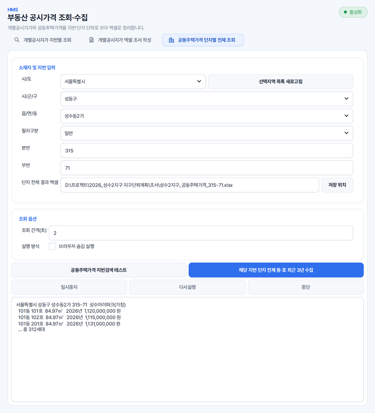

편입토지조서에 공시지가 채우기
수백 필지의 조서를 넣으면 필지마다 고르신 기간의 가격을 연도별로 채웁니다. 한 필지씩 조회하면 며칠이 걸리던 일입니다.
공시가격을 필지마다 사이트에서 찾아 옮겨 적던 일을 대신합니다. 목록만 주시면 공시지가를 찾아, 쓰시던 조서 오른쪽에 연도별 가격을 붙여 드립니다.
지번 하나를 직접 적거나, 소재지와 지번이 든 엑셀 목록을 넣습니다. 어느 칸이 소재지인지는 알아서 찾습니다.
넣으신 칸은 그대로 두고, 오른쪽에 연도별 가격 칸과 조회상태 칸이 덧붙습니다.
수백 필지의 조서를 넣으면 필지마다 고르신 기간의 가격을 연도별로 채웁니다. 한 필지씩 조회하면 며칠이 걸리던 일입니다.
공시가격이 공개되는 4월 직후부터 6~7월까지는 그해 것이 정리된 자료로 나오기 전이라 사이트에서 하나씩 조회해야 합니다. 그 기간에도 목록째로 모으실 수 있습니다.
단지 단위 자료는 구할 수 있어도 호별 가격은 따로 정리된 것을 구하기 어렵습니다. 소재지와 지번으로 단지를 정하면 단지 전체 동 · 호의 가격을 받아 한 파일에 담습니다.
최근 1 · 3 · 5 · 10년 가운데 고르시면 그 기간의 가격이 한 줄에 나란히 놓입니다. 보상이나 감정평가 검토에서 값이 어떻게 움직였는지 한 장으로 보실 수 있습니다.
개별공시지가 지번별 조회 · 개별공시지가 엑셀 조서 작성 · 공동주택가격 단지별 전체 조회 세 탭 가운데 하나를 고르십니다.
시/도 · 시/군/구 · 읍/면/동을 고르고 본번 · 부번을 적거나, 소재지와 지번이 든 목록 파일을 고르십니다.
조회 기간을 고르고, 사이트가 붐빌 때는 조회 간격을 늘리시면 실패가 줄어듭니다. [브라우저 숨김 실행]을 켜면 창이 뜨지 않습니다.
중간에 [일시중지] · [다시실행] · [중단]을 쓰실 수 있고, 멈추셔도 그때까지 모은 것은 저장됩니다.
끝나면 몇 건을 찾았는지와 못 찾은 지번이 무엇인지 보여 드립니다.
가상의 사업지(성수2지구 지구단위계획) 자료를 넣어 찍은 화면입니다.



최근 1 · 3 · 5 · 10년 가운데 고르실 수 있습니다. 개별공시지가는 2000년부터, 공동주택가격은 2006년(또는 준공한 해)부터 사이트에 있는 해만큼 받아 옵니다.
결과 파일의 조회상태 칸에 OK 또는 실패 이유가 적히고, 조회가 끝나면 못 찾은 지번을 목록으로 알려 드립니다. 지번 표기가 다르거나 폐쇄된 필지일 수 있으니 그 줄만 골라 확인해 주시기 바랍니다.
넣으실 수 있습니다. 합계 · 소계 줄과 ※ 로 시작하는 주석 줄은 조회하지 않고 대상 아님으로 표시하며, 소재지 칸을 세로로 병합했거나 상동으로 적은 줄은 바로 위 줄의 소재지로 읽습니다.
있어야 합니다. 부동산 공시가격 알리미 사이트를 Chrome 으로 열어 값을 읽어 오기 때문입니다.
솔루션을 하나씩 받지 않습니다. Solution Center 를 한 번 설치하면 그 안에서 골라 설치합니다.
파이썬 같은 실행환경까지 함께 들어 있어, 쓰시는 컴퓨터에 따로 준비하실 것이 없습니다.
소속은 회사명 · 학교명 · 기관명을 정확히 적어 주셔야 승인됩니다.
내려받기부터 설치까지 한 번에 끝납니다. 새 버전이 나오면 카드가 알려 줍니다.
쓰시다가 막히면 화면을 캡처해 카카오톡 오픈채팅이나 메일로 보내 주세요. 오류 창이 떴다면 그 창까지 함께 담아 주시면 가장 빠릅니다. 문의하는 곳은 홈페이지 문의 칸에 모아 두었습니다.
모두 같은 Solution Center 안에서 골라 설치합니다.